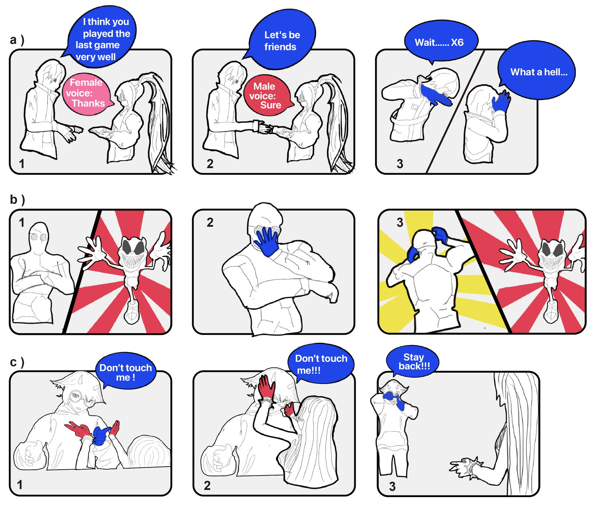
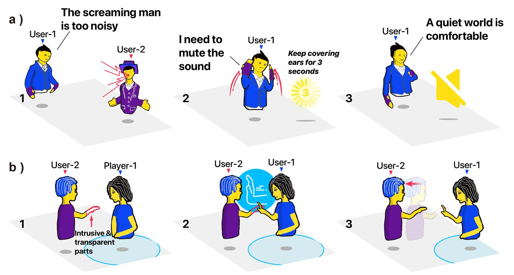

Safety in Social VR: What Goes Wrong, and What Safety Features Miss
In social VR, people meet as full-body avatars, so harassment is not just seen or heard but felt: in one video, a virtual slap sent a victim to the floor in real life. We watched 212 first-person YouTube videos to see how safety risks unfold in the moment, then tested platforms' safety features against them. The features center on personal space, while attacks also travel through voices, words, and gestures.

Methods
We asked three questions: what safety risks people run into in social VR, how attackers, victims, bystanders, and spectators react to them, and which of those risks the platforms' safety features address. Study 1 answered the first two through a content analysis of YouTube videos; Study 2 answered the third.
-
Study 1: Collecting first-person videos
Searched YouTube titles through its API for combinations of VR terms, platform names (VRChat, Rec Room, AltspaceVR, and Horizon Worlds), and words for safety risks such as harassment, toxic, and harm, in videos posted from January to June 2022. We kept first-person footage of several people socializing in a social VR app.
4,748 videos screened · 212 analyzed · 135 YouTubers -
Coding risks, cues, and reactions
Built a codebook from prior taxonomies of online harassment and from categories of social cues (linguistic, paralinguistic, kinetic, proxemic, eye, and facial), refined it over eight rounds among three researchers, and checked inter-coder reliability. Two researchers then coded every video for its risk type and for the cues and reactions of each attacker, victim, and bystander.
≈ 14 minutes per video on average - Mining comments and transcripts Sentiment analysis of viewers' comments captured how spectators saw each type of risk, and counts of censored and negative words in the transcripts showed how language differed across risk types.
-
Study 2: Reviewing safety features
Reviewed the official safety documentation of four popular platforms (VRChat, Rec Room, Horizon Worlds, and AltspaceVR), then triggered each feature in Oculus Quest 2 headsets to verify it and to find ones the documentation missed.
13 safety features · 4 platforms - Mapping risks to features Compared the cues that attackers and victims used in each type of risk with the cues each safety feature responds to, to locate the gaps.
Safety Risks
We identified seven types of safety risk that echo harms elsewhere online but grow more severe with embodiment and immersion, along with five that are new to social VR.
Videos by type of safety risk 212 videos, one risk type each
Familiar online risks, amplified
- Virtual abuse44
- Virtual scaring44
- Virtual trash actions44
- Virtual voice trolling40
- Virtual violence15
- Virtual sexual harassment9
- Virtual crashing7
New to social VR
- Five emerging risks9
The five emerging risks grow out of social VR's still-forming norms: role-playing and impersonation, “immersive dwellers” who linger for hours in front of public mirrors or asleep in lobbies, misread cues, safety features turned against others (as when a group vote-kicked a user in a furry avatar), and minors picking on adults. Across all types, the risks were:
Severe
Virtual violence can set off real-world reactions. One victim slapped by another avatar fell to the floor in real life.
Ambiguous
Role-play blurs the line. When users posing as children at a daycare hit each other, bystanders couldn't tell if anyone was really hurt.
Unexpected
Attackers exploit physics that defy common sense, such as hiding beneath floors they can pass through and jumping out at people.
How People React
Attackers stack cues to feel real
In 60.4% of videos, attackers combined several social cues at once, such as threats, rushing in, and poking, and amplified them with scary custom avatars, groups in identical avatars, and virtual weapons.
Victims defend themselves as if it were physical
Victims covered their ears, eyes, and heads, stepped back, or ran, often screaming. Only 13.6% fought back, and many who said “ban this guy” or “I'm gonna mute him” never actually used a safety feature.
Bystanders mostly watch, but watching matters
Bystanders appeared in about a quarter of the videos and mostly looked on, ignored the attack, or laughed. Still, one attacker stopped as soon as he noticed a bystander watching.
Spectators read some risks as entertainment
In YouTube comments, voice trolling drew the most positive reactions (27.4%) and sexual harassment the most negative (13.7%), with many viewers sharing their own experiences of being harassed.
Where Safety Features Fall Short
Across the four platforms, we found 13 safety features that act at three moments: boundary settings before harm, quick reactions after it, and agreements that apply all the time.
Before harmBoundary settings
- Personal boundaryProxemics
- Trust reputationProxemics
- Social spacesProxemics
- Shield levelsProxemics
- Voice controlParalinguistic
- Avatar controlEyes & face
- Age limitsNo cue
After harmQuick reactions
- Safety gesturesKinetic
- Safety zoneProxemics
- Vote kickProxemics
- Safety reportsNo cue
All the timeAgreements
- Codes of conductNo cue
- Informed consentNo cue
6 of 13 features rely on proxemics, and only one each on paralinguistic, kinetic, or eye-and-face cues. None respond to linguistic cues: what people actually say.
Mapping these features against the risks from Study 1 revealed three gaps:
- Centered on proximity. Personal-space tools can't reach risks that hinge on words and voice, like sexual harassment and voice trolling, or on gestures and movement, like violence and scaring.
- Few natural gestures. Only Rec Room's “talk to the hand” stop gesture works as a safety shortcut, so flustered victims must open menus mid-attack, even though they instinctively cover their ears and heads.
- Reactive, not preventive. Nearly every feature acts only after harm occurs, although attackers' cues, such as certain phrases or harmful gestures, could flag risks before they land.
Design Implications
We proposed safety designs that build on what attackers and victims actually do, sketched as scenarios in the paper.

NPCs as safety companions
A non-player character teaches safety gestures in a practice mode, and patrolling “mediator” NPCs, more of them where reports pile up, deter attacks the way watching bystanders did.
Natural gestures as triggers
Cover your ears to mute the noise around you, cover your eyes to highlight who is attacking, or push an intruder away to set your own boundary.
Avatar and voice shields
Warn users who pick a frightening avatar, show it to others in public spaces only as a translucent outline, and keep corpse-like voices to the games made for them.
Contributions
- Showed that first-person YouTube videos can capture safety risks in the moment, with the setting, objects, and bystanders in view, rather than as recalled later in interviews or surveys.
- Built a shared vocabulary of seven types of safety risk and five emerging ones, along with the social cues attackers and victims use in each.
- Took a first step toward evaluating safety features against real risks, mapping 13 features across four platforms and showing where they fall short.
- Proposed gesture- and avatar-based safety designs grounded in how victims instinctively react.
My Role
Co-second author with Shengyang Xu (equal contribution). I worked with Qingxiao Zheng and Prof. Yun Huang at the University of Illinois Urbana-Champaign and Prof. Guo Freeman at Clemson University while studying industrial engineering at Tsinghua University.
I took initiative throughout the project and contributed to collecting and screening the YouTube videos, building the codebook and coding the safety risks and social cues, reviewing the platforms' safety features, mapping the risks against the features, and developing the design implications.
Cite
Qingxiao Zheng, Shengyang Xu, Lingqing Wang, Yiliu Tang, Rohan C. Salvi, Guo Freeman, and Yun Huang. 2023. Understanding Safety Risks and Safety Design in Social VR Environments. Proc. ACM Hum.-Comput. Interact. 7, CSCW1, Article 154 (April 2023), 37 pages. https://doi.org/10.1145/3579630